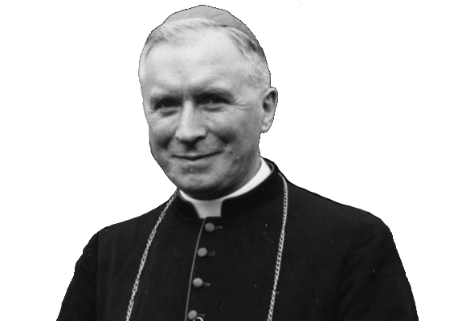

The Prayers & Mysteries of the Holy Rosary
click here for instructions on using rosary beads
Audio: The Holy Rosary with Mother Angelica and the Nuns of Our Lady of the Angels Monastery
Joyful Mysteries (Monday, Thursday & Saturday)
Sorrowful Mysteries (Tuesday & Friday)
Glorious Mysteries (Wednesday & Sunday)
Luminous Mysteries (Thursday *Non-Traditional*)
Video: The Holy Rosary with Mother Angelica and the Nuns of Our Lady of the Angels Monastery
Video Files (YouTube)
APOSTLES' CREED
I believe in God, the Father Almighty, Creator of heaven and earth;
and in Jesus Christ, His only Son, our Lord;
who was conceived by the Holy Ghost, born of the Virgin Mary, suffered under Pontius Pilate, was crucified, died, and buried.
He descended into hell; on the third day He rose again from the dead;
He ascended into Heaven, where he sits at the right hand of God the Father Almighty;
from thence He shall come to judge the living and the dead.
I believe in the Holy Ghost,
the Holy Catholic Church,
the Communion of Saints,
the forgiveness of sins,
the resurrection of the body,
and life everlasting.
Amen.
GLORY BE
Glory be to the Father,
and to the Son,
and to the Holy Ghost.
As it was in the beginning,
is now,
and ever shall be,
world without end.
Amen.
FATIMA PRAYER (Recited at the end of each decade)
O my Jesus,
forgive us our sins,
save us from the fires of Hell,
lead all souls to Heaven,
especially those who most need Thy mercy.
OUR FATHER
Our Father,
Who art in Heaven,
hallowed be Thy Name.
Thy kingdom come,
Thy will be done on earth as it is in Heaven.
Give us this day our daily bread,
and forgive us our trespasses,
as we forgive those who trespass against us.
And lead us not into temptation,
but deliver us from evil.
Amen.
HAIL MARY
Hail Mary,
full of grace,
the Lord is with thee;
blessed art thou among women,
and blessed is the Fruit of thy womb,
Jesus.
Holy Mary,
Mother of God,
pray for us sinners,
now and at the hour of our death.
Amen.
HAIL HOLY QUEEN
Hail, holy Queen,
Mother of mercy,
hail our life,
our sweetness and our hope.
To thee do we cry,
poor banished children of Eve.
To thee do we send up our sighs,
mourning and weeping in this valley of tears.
Turn then, most gracious advocate,
thine eyes of mercy towards us.
And after this our exile,
show unto us the blessed Fruit of thy womb,
Jesus.
O clement,
O loving,
O sweet Virgin Mary.
V. Pray for us, O holy Mother of God.
R. That we may be made worthy of the promises of Christ.
PRAYER AFTER THE ROSARY (Let Us Pray)
Let Us Pray
O God,
whose only begotten Son,
by His life, death, and resurrection,
has purchased for us the rewards of eternal life,
grant, we beseech Thee,
that meditating upon these mysteries of the Most Holy Rosary of the Blessed Virgin Mary,
we may imitate what they contain and obtain what they promise,
through the same Christ Our Lord.
Amen.
May the divine assistance remain always with us.
And may the souls of the faithful departed
through the mercy of God rest in peace.
Amen.
PRAYER TO ST JOSEPH (Often recited after the Rosary)
To Thee, O Blessed Joseph,
we have recourse in our tribulations and while imploring the aid of Thy Most Holy Spouse,
we confidently invoke Thy patronage also.
By that love which united Thee to the Immaculate Virgin Mother of God,
and by the fatherly affection with which Thou didst embrace the Infant Jesus,
we humbly beseech Thee graciously to regard the inheritance which Jesus Christ purchased by His Blood;
and to help us in our necessities by Thy powerful intercession.
Protect, O most provident guardian of the Holy Family,
the chosen children of Jesus Christ;
ward off from us,
O most loving Father all taint of error and corruption;
graciously assist us from Heaven,
O most powerful protector in our struggle with the powers of darkness;
and as Thou didst once rescue the Child Jesus from imminent peril to His life,
so now defend the Holy Church of God from the snares of her enemies and from all adversity.
Shield each one of us with Thine unceasing patronage,
that imitating Thine example and supported by Thine aid,
we may be enabled to live a good life,
die a holy death,
and secure everlasting happiness in Heaven.
Amen.
PRAYER TO ST MICHAEL* (Often recited after the Rosary)
St. Michael the Archangel,
defend us in battle,
be our protection against the wickedness and snares of the devil.
May God rebuke him we humbly pray;
and do thou,
O Prince of the Heavenly host,
by the power of God,
cast into hell Satan and all the evil spirits who prowl about the world seeking the ruin of souls.
Amen.
PRAYER FOR VOCATIONS (To be said after the daily Rosary. Repeat each of the four invocations twice.)
O Lord, grant us priests!
O Lord, grant us holy priests!
O Lord, grant us many holy priests!
O Lord, grant us many holy religious vocations!
V. St Pius X
R. Pray for us.
Litany of the Blessed Virgin (Litany of Loreto)
Full text and MP3 audio of the Litany of the Blessed Virgin (Litany of Loreto)
THE MYSTERIES
JOYFUL MYSTERIES
i. The Annunciation of the Blessed Virgin Mary
- The Angel Gabriel is sent to Nazareth.
- The Angel greets Mary: “Hail, full of grace; the Lord is with thee.”
- Mary is troubled at the Angel’s word.
- Gabriel tells Mary that she is to be the Mother of God.
- Mary speaks of her virginity: “How shall this be done, since I know not man?”
- The Angel foretells the Virgin Birth.
- Gabriel also says that Elizabeth has conceived a child in her old age.
- Mary consents: “Behold the handmaid of the Lord; be it done unto me according to thy word.”
- The Word is made flesh.
- Mary adores the God Who has become incarnate within her womb.
ii. The Visitation of the Blessed Virgin Mary to St Elizabeth
- Mary hastens to visit Elizabeth in her time of need.
- Mary greets Elizabeth.
- At the sound of Mary’s voice, John leaps for joy in his mother’s womb.
- Elizabeth praises Mary: “Blessed art thou among women, and blessed is the fruit of thy womb.”
- Mary returns praise to God: “My soul doth magnify the Lord...”
- Mary waits on Elizabeth.
- John the Baptist is born and the people celebrate.
- Zachary’s tongue is loosed and he praises God.
- Joseph fears to take Mary for his spouse.
- An Angel reassures Joseph, telling him that Mary has conceived by the Holy Ghost.
iii. The Nativity of Our Lord Jesus Christ
- Mary and Joseph journey to Bethlehem.
- They are turned away from the inn; there is no room for them.
- Joseph finds shelter in a stable.
- Jesus is born and laid in a manger.
- The angels announces the birth of Christ to the shepherds.
- The heavenly host praises God: “Glory to God in the highest...”
- The shepherds come to worship at the crib.
- They marvel at the word of the angels.
- Mary ponders these things in her heart.
- The Magi come to adore the Christ Child.
iv. The Presentation of Our Lord in the Temple
- Mary and Joseph bring the Infant to the Temple.
- Mary and Joseph make an offering of two doves for the Child.
- Simeon sees the Christ Child and recognizes the Messias.
- He receives the Christ Child into his arms.
- Simeon blesses Mary and Joseph.
- He foretells the destiny of the Child and the sorrows of His Mother.
- Anna, who leads a life of prayer and penance, also recognizes the Savior.
- She speaks of the child to the people.
- An angel warns the Holy Family to flee into Egypt to escape Herod.
- The Holy Family returns to Nazareth.
v. The Finding of the Child Jesus in the Temple
- The Holy Family journeys to Jerusalem to celebrate the Pasch.
- The Holy Family worships at the feast.
- After the feast, Mary and Joseph leave Jerusalem, not knowing that Jesus remained behind.
- Jesus is found missing from the caravan after a day’s journey.
- Mary and Joseph search for three days.
- Jesus is found in the Temple in the midst of the doctors.
- Mary receives her Child in Joy and anguish.
- Jesus speaks of his Father’s work.
- Jesus returns with Mary and Joseph; Mary ponders in her heart.
- Jesus grows in wisdom, age and grace.
SORROWFUL MYSTERIES
i. The Agony of Our Lord in the Garden
- After the Last Supper Jesus and the Apostles go to the Garden of Olives.
- Jesus asks the Apostles to watch with Him.
- Jesus withdraws and prays.
- As He thinks of what He is to suffer and of our ingratitude, He is bathed in a sweat of blood.
- Jesus awakens the Apostles, who have fallen asleep from weariness.
- He returns to His prayer, and asks His Father that this chalice to pass away.
- Jesus again finds the Apostles sleeping.
- He returns to His prayer; an Angel comes to comfort Him.
- Mary keeps an agonizing vigil.
- Jesus goes to meet His betrayer.
ii. The Scourging at the Pillar
- The people cry for Christ’s crucifixion.
- Pilate orders Jesus to be scourged even though He is innocent.
- Jesus is stripped and bound to the pillar.
- He is scourged by the soldiers.
- Jesus suffers without complaint.
- Jesus atones for our sins of the flesh.
- Mary suffers in compassion.
- Jesus is scourged above measure.
- The prophecy of Isaias is fulfilled (53:5).
- The Holy Shroud bears witness to the lashes.
iii. The Crowning with Thorns
- The soldiers surround Christ and mock Him.
- Jesus is clothed in royal purple.
- The soldiers form a crown of thorns and place it on His head.
- They crush it down so that the thorns pierce His sacred head.
- The soldiers place a reed in Jesus’ hand and mock Him.
- They spit upon Him and strike His face.
- Jesus is beaten with the reed.
- He suffers meekly.
- Mary suffers in compassion.
- Pilate shows Jesus to the people: “Ecce Homo!”
iv. The Carrying of the Cross
- Pilate, washing his hands, condemns Jesus to death.
- The Apostles flee in fear.
- Jesus takes up His cross.
- He is so weak from the scourging that soon He falls beneath it.
- The people jeer at Christ.
- Jesus meets his afflicted Mother.
- Simon is made to help Jesus carry the cross.
- Veronica wipes the face of Jesus.
- Jesus speaks to the weeping women.
- Jesus climbs Calvary.
V. The Crucifixion of Our Lord
- Jesus is stripped of His garments.
- He is nailed to the cross and it is raised.
- The soldiers cast lots for Christ’s robe.
- The people mock Jesus: “If thou art the Christ, come down from the cross!”
- Jesus prays for His enemies: “Father, forgive them, for they know not what they do!”
- He promises paradise to the thief.
- He leaves us His mother: “Son, behold thy mother!”
- Jesus gives up His spirit: “Father, into Thy hands I commend My spirit.”
- Jesus is taken down from the cross and laid in His Mother’s arms.
- Jesus is laid in the tomb.
GLORIOUS MYSTERIES
i. The Resurrection of Our Lord Jesus Christ
- Christ rises from the dead.
- The women go to the tomb.
- An Angel descends to roll back the stone.
- The tomb is found empty.
- The Angels announce the Resurrection.
- Jesus appears to Mary Magdalen.
- The Apostles doubt the women's word.
- Peter and John find the cloths in the tomb.
- Jesus joins the disciples going to Emmaus.
- Jesus appears to the Apostles.
ii. The Ascension of Our Lord Jesus Christ
- He shows Himself for forty days to the apostles and disciples, at one time to more than 500 brethren.
- Jesus sends the Apostles to preach the Gospel.
- He commands them not to leave Jerusalem, but to await the coming of the Holy Ghost.
- In the presence of the apostles and disciples, a cloud receives Jesus out of their sight.
- The Angels reassure the them and promise Christ's return.
- Mary is filled with joy.
- Jesus leads the Saints into Heaven.
- Jesus sits at the right hand of the Father.
- He intercedes for us to the Father.
- The disciples return to the Upper Room to pray and await the Holy Ghost.
iii. The Descent of the Holy Ghost upon the Apostles
- The disciples persevere in prayer with Mary.
- Matthias is chosen to take the place of Judas.
- The sound of a mighty wind fills the Cenacle.
- Tongues of fire rest on the disciples.
- The disciples are filled with the Holy Spirit.
- The Apostles preach to the people about Christ.
- The people are filled with wonder because each hears the Apostles speaking in his own tongue.
- Peter preaches that Christ is the Messias and that He rose from the dead.
- About three thousand souls accepted the Apostles' word and were baptized that day.
- Through the Apostles we receive the Holy Ghost.
iv. The Assumption of Our Lady into Heaven
- Mary longs to see her Son.
- Soon she is to be reunited with Him in Heaven.
- The Apostles come to see Mary before she dies.
- They are heartbroken that she is to leave them.
- Mary consoles and strengthens each of the Apostles.
- Her love for her Son is so great that her body can no longer contain her soul.
- She dies in peace and great joy.
- Mary is laid to rest.
- Mary is assumed into Heaven and is received joyously in Heaven.
- The Apostles find the tomb empty.
v. The Coronation of Our Lady in Heaven
- Jesus crowns Mary Queen of Heaven.
- She is enthroned at the right hand of Jesus.
- Mary is seen crowned with twelve stars.
- The Angels and Saints praise her.
- The faithful on earth praise her.
- Mary intercedes for us with her Son.
- Jesus cannot refuse the prayers of His Holy Mother.
- St. Joseph reigns with Jesus and Mary.
- The day of Judgment approaches.
- The Church longs for heaven.
